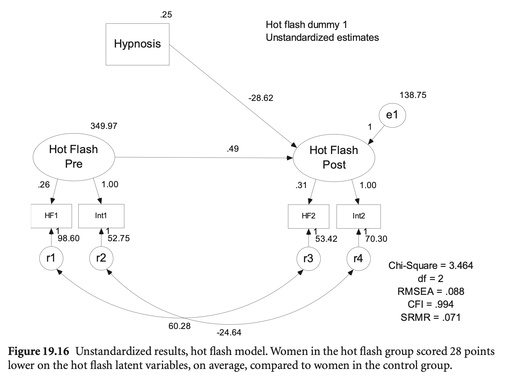

Load libraries
library(haven)
library(psych)
library(tidyverse)
library(lavaan)
library(semTools)
library(manymome)Multiple Regression and Beyond (3e) by Timothy Z. Keith
library(haven)
library(psych)
library(tidyverse)
library(lavaan)
library(semTools)
library(manymome)예를 들어, 3-indicator, 1-factor 모형을 보면,
\(x_1 = \alpha_1 + \lambda_{11} \xi_1 + \delta_1\)
\(x_2 = \alpha_2 + \lambda_{21} \xi_1 + \delta_2\)
\(x_3 = \alpha_3 + \lambda_{31} \xi_1 + \delta_3\)
(회귀계수 \(\lambda\): factor loading, 요인부하량, \(\alpha\): 절편)

변수 \(X\)의 평균의 의미: 예측변수 \(I=(1, 1, ..., 1)\)에 대한 회귀계수인 절편; lm(y ~ 1)
절편(intercept)을 통해 평균(mean)을 추정하게 되고
선형함수에 의해 \(X\)(들)의 평균(벡터)은 \(Y\)의 평균으로 예측됨!
Latent의 평균은 보통 0으로 설정하므로, indicator의 절편은 곧 indicator평균이 됨.
파라미터인 절편의 갯수가 늘어나는 만큼 평균에 대한 정보도 늘어나기 때문에,
평균 구조(mean structure)를 추정하더라도 모형의 자유도나 적합도, 모수 등에 변화는 없음.
SEM diagram에서의 표시


예를 들어,

FIGURE 9.1. Recursive path model of illness with unstandardized parameters for the covariance structure and the mean structure. Estimates for the mean structure are shown in boldface. Values for exercise and hardy (exogenous variables) are means, and values for fitness, stress, and illness (endogenous variables) are intercepts.
Source: Kline, R. B. (2023). Principles and practice of structural equation modeling (5e)
hw_mean <- haven::read_sav("data/chap 19 latent means/Homework means.sav")가령 다음과 같은 모형에 대한 절편을 포함한 파라미터를 추정한다면,
잠재변수의 평균은 0으로 설정

intercept_model <- "
Grades =~ eng92 + math92 + sci92 + soc92
HW =~ f2s25f2 + f1s36a2
Grades ~ HW + byfaminc
"
intercept_fit <- sem(intercept_model, data = hw_mean, meanstructure = TRUE)
inspect(intercept_fit, what = "estimates") |> print()$lambda
Grades HW byfmnc
eng92 1.000 0.000 0
math92 0.863 0.000 0
sci92 0.969 0.000 0
soc92 1.032 0.000 0
f2s25f2 0.000 1.000 0
f1s36a2 0.000 1.051 0
byfaminc 0.000 0.000 1
$theta
eng92 math92 sci92 soc92 f2s252 f1s362 byfmnc
eng92 1.040
math92 0.000 2.401
sci92 0.000 0.000 1.499
soc92 0.000 0.000 0.000 1.334
f2s25f2 0.000 0.000 0.000 0.000 2.553
f1s36a2 0.000 0.000 0.000 0.000 0.000 1.419
byfaminc 0.000 0.000 0.000 0.000 0.000 0.000 0.000
$psi
Grades HW byfmnc
Grades 3.535
HW 0.000 1.267
byfaminc 0.000 0.000 6.008
$beta
Grades HW byfmnc
Grades 0 0.838 0.209
HW 0 0.000 0.000
byfaminc 0 0.000 0.000
$nu
intrcp
eng92 4.396
math92 4.028
sci92 4.127
soc92 4.486
f2s25f2 3.410
f1s36a2 2.588
byfaminc 0.000
$alpha
intrcp
Grades 0.000
HW 0.000
byfaminc 10.082
parameterEstimates(intercept_fit, standardized = TRUE, ci = FALSE) |> print() lhs op rhs est se z pvalue std.lv std.all std.nox
1 Grades =~ eng92 1.000 0.000 NA NA 2.165 0.905 0.905
2 Grades =~ math92 0.863 0.030 28.393 0 1.868 0.770 0.770
3 Grades =~ sci92 0.969 0.027 35.336 0 2.099 0.864 0.864
4 Grades =~ soc92 1.032 0.028 37.353 0 2.235 0.888 0.888
5 HW =~ f2s25f2 1.000 0.000 NA NA 1.126 0.576 0.576
6 HW =~ f1s36a2 1.051 0.147 7.133 0 1.183 0.705 0.705
7 Grades ~ HW 0.838 0.105 7.970 0 0.436 0.436 0.436
8 Grades ~ byfaminc 0.209 0.029 7.120 0 0.097 0.237 0.097
9 eng92 ~~ eng92 1.040 0.082 12.748 0 1.040 0.181 0.181
10 math92 ~~ math92 2.401 0.133 18.007 0 2.401 0.408 0.408
11 sci92 ~~ sci92 1.499 0.097 15.443 0 1.499 0.254 0.254
12 soc92 ~~ soc92 1.334 0.095 14.009 0 1.334 0.211 0.211
13 f2s25f2 ~~ f2s25f2 2.553 0.213 11.987 0 2.553 0.668 0.668
14 f1s36a2 ~~ f1s36a2 1.419 0.202 7.009 0 1.419 0.504 0.504
15 Grades ~~ Grades 3.535 0.249 14.170 0 0.754 0.754 0.754
16 HW ~~ HW 1.267 0.222 5.718 0 1.000 1.000 1.000
17 byfaminc ~~ byfaminc 6.008 0.000 NA NA 6.008 1.000 6.008
18 eng92 ~1 4.396 0.307 14.303 0 4.396 1.837 1.837
19 math92 ~1 4.028 0.272 14.785 0 4.028 1.660 1.660
20 sci92 ~1 4.127 0.300 13.757 0 4.127 1.699 1.699
21 soc92 ~1 4.486 0.318 14.104 0 4.486 1.783 1.783
22 f2s25f2 ~1 3.410 0.068 50.258 0 3.410 1.744 1.744
23 f1s36a2 ~1 2.588 0.058 44.413 0 2.588 1.542 1.542
24 byfaminc ~1 10.082 0.000 NA NA 10.082 4.113 10.082
25 Grades ~1 0.000 0.000 NA NA 0.000 0.000 0.000
26 HW ~1 0.000 0.000 NA NA 0.000 0.000 0.000
hw_model <- "
Famback =~ parocc + byfaminc + bypared
Prevach =~ bytxrstd + bytxmstd + bytxsstd + bytxhstd
HW =~ f2s25f2 + f1s36a2
Grades =~ eng92 + math92 + sci92 + soc92
bytxrstd ~~ eng92
bytxmstd ~~ math92
bytxsstd ~~ sci92
bytxhstd ~~ soc92
Prevach ~ Famback
Grades ~ Prevach + HW
HW ~ Prevach + Famback
"
sem_fit <- sem(hw_model,
data = hw_mean,
meanstructure = TRUE,
missing = "FIML" # for mising data
)
summary(sem_fit, standardized = TRUE, fit.measures = TRUE) |> print()lavaan 0.6-19 ended normally after 171 iterations
Estimator ML
Optimization method NLMINB
Number of model parameters 48
Number of observations 1000
Number of missing patterns 42
Model Test User Model:
Test statistic 113.358
Degrees of freedom 56
P-value (Chi-square) 0.000
Model Test Baseline Model:
Test statistic 7792.886
Degrees of freedom 78
P-value 0.000
User Model versus Baseline Model:
Comparative Fit Index (CFI) 0.993
Tucker-Lewis Index (TLI) 0.990
Robust Comparative Fit Index (CFI) 0.993
Robust Tucker-Lewis Index (TLI) 0.990
Loglikelihood and Information Criteria:
Loglikelihood user model (H0) -32104.831
Loglikelihood unrestricted model (H1) NA
Akaike (AIC) 64305.662
Bayesian (BIC) 64541.235
Sample-size adjusted Bayesian (SABIC) 64388.784
Root Mean Square Error of Approximation:
RMSEA 0.032
90 Percent confidence interval - lower 0.023
90 Percent confidence interval - upper 0.040
P-value H_0: RMSEA <= 0.050 1.000
P-value H_0: RMSEA >= 0.080 0.000
Robust RMSEA 0.032
90 Percent confidence interval - lower 0.023
90 Percent confidence interval - upper 0.041
P-value H_0: Robust RMSEA <= 0.050 1.000
P-value H_0: Robust RMSEA >= 0.080 0.000
Standardized Root Mean Square Residual:
SRMR 0.023
Parameter Estimates:
Standard errors Standard
Information Observed
Observed information based on Hessian
Latent Variables:
Estimate Std.Err z-value P(>|z|) Std.lv Std.all
Famback =~
parocc 1.000 15.210 0.710
byfaminc 0.124 0.006 19.348 0.000 1.891 0.728
bypared 0.069 0.003 20.632 0.000 1.049 0.834
Prevach =~
bytxrstd 1.000 8.532 0.852
bytxmstd 0.988 0.030 32.651 0.000 8.432 0.853
bytxsstd 0.960 0.031 30.702 0.000 8.189 0.819
bytxhstd 0.942 0.030 31.597 0.000 8.039 0.830
HW =~
f2s25f2 1.000 1.171 0.592
f1s36a2 0.994 0.103 9.671 0.000 1.164 0.688
Grades =~
eng92 1.000 2.436 0.915
math92 0.876 0.025 34.958 0.000 2.135 0.812
sci92 0.961 0.023 41.780 0.000 2.341 0.884
soc92 1.049 0.023 45.416 0.000 2.555 0.908
Regressions:
Estimate Std.Err z-value P(>|z|) Std.lv Std.all
Prevach ~
Famback 0.325 0.022 14.540 0.000 0.579 0.579
Grades ~
Prevach 0.140 0.011 12.973 0.000 0.490 0.490
HW 0.655 0.101 6.491 0.000 0.315 0.315
HW ~
Prevach 0.045 0.008 5.612 0.000 0.331 0.331
Famback 0.018 0.005 3.986 0.000 0.235 0.235
Covariances:
Estimate Std.Err z-value P(>|z|) Std.lv Std.all
.bytxrstd ~~
.eng92 0.486 0.256 1.900 0.057 0.486 0.086
.bytxmstd ~~
.math92 1.573 0.320 4.915 0.000 1.573 0.199
.bytxsstd ~~
.sci92 0.459 0.294 1.563 0.118 0.459 0.064
.bytxhstd ~~
.soc92 0.266 0.278 0.956 0.339 0.266 0.042
Intercepts:
Estimate Std.Err z-value P(>|z|) Std.lv Std.all
.parocc 51.388 0.679 75.669 0.000 51.388 2.400
.byfaminc 9.841 0.083 118.414 0.000 9.841 3.792
.bypared 3.128 0.040 78.568 0.000 3.128 2.485
.bytxrstd 51.257 0.320 160.386 0.000 51.257 5.120
.bytxmstd 51.493 0.316 163.072 0.000 51.493 5.206
.bytxsstd 51.179 0.320 160.149 0.000 51.179 5.117
.bytxhstd 51.373 0.310 165.931 0.000 51.373 5.302
.f2s25f2 3.280 0.066 49.942 0.000 3.280 1.659
.f1s36a2 2.481 0.055 45.366 0.000 2.481 1.465
.eng92 6.074 0.084 71.892 0.000 6.074 2.281
.math92 5.482 0.083 65.676 0.000 5.482 2.086
.sci92 5.770 0.084 68.653 0.000 5.770 2.177
.soc92 6.207 0.089 69.614 0.000 6.207 2.207
Variances:
Estimate Std.Err z-value P(>|z|) Std.lv Std.all
.parocc 227.271 13.266 17.132 0.000 227.271 0.496
.byfaminc 3.161 0.198 15.973 0.000 3.161 0.469
.bypared 0.483 0.044 10.967 0.000 0.483 0.305
.bytxrstd 27.413 1.704 16.091 0.000 27.413 0.274
.bytxmstd 26.728 1.669 16.017 0.000 26.728 0.273
.bytxsstd 32.977 1.881 17.536 0.000 32.977 0.330
.bytxhstd 29.242 1.709 17.107 0.000 29.242 0.312
.f2s25f2 2.537 0.178 14.290 0.000 2.537 0.649
.f1s36a2 1.510 0.149 10.158 0.000 1.510 0.527
.eng92 1.155 0.080 14.479 0.000 1.155 0.163
.math92 2.349 0.122 19.249 0.000 2.349 0.340
.sci92 1.541 0.092 16.744 0.000 1.541 0.219
.soc92 1.383 0.091 15.197 0.000 1.383 0.175
Famback 231.337 19.948 11.597 0.000 1.000 1.000
.Prevach 48.379 3.317 14.583 0.000 0.665 0.665
.HW 1.021 0.154 6.644 0.000 0.745 0.745
.Grades 3.063 0.200 15.324 0.000 0.516 0.516


Elkins et al (2008)
모형에 대한 가정 검토

# load the dataset
hotflash <- read_sav("data/chap 19 latent means/hot flash simulated.sav")
# make a grouping variable as a factor
hotflash <- hotflash |>
mutate(g = factor(Group, labels = c("control", "treatment")))
hotflash |> print()# A tibble: 96 × 6
Group HF1 HF2 int1 int2 g
<dbl+lbl> <dbl> <dbl> <dbl> <dbl> <fct>
1 0 [Control] 33.4 32.7 64 38 control
2 1 [Hypnosis Intervention] 25.5 12.7 52 5 treatment
3 1 [Hypnosis Intervention] 11.0 7.60 9 2 treatment
4 1 [Hypnosis Intervention] 8.05 4.05 13 6 treatment
5 0 [Control] 13.2 4.34 61 36 control
6 0 [Control] 9.89 8.89 15 34 control
# ℹ 90 more rowshotflash_model <- "
hf_pre =~ int1 + HF1
hf_post =~ int2 + HF2
hf_post ~ hf_pre + Group # Group: numeric variable!
HF1 ~~ HF2
int1 ~~ int2
"
hotflash_fit <- sem(hotflash_model, data = hotflash)
summary(hotflash_fit, standardized = TRUE, fit.measures = TRUE) |> print()lavaan 0.6-19 ended normally after 161 iterations
Estimator ML
Optimization method NLMINB
Number of model parameters 12
Number of observations 96
Model Test User Model:
Test statistic 3.501
Degrees of freedom 2
P-value (Chi-square) 0.174
Model Test Baseline Model:
Test statistic 244.790
Degrees of freedom 10
P-value 0.000
User Model versus Baseline Model:
Comparative Fit Index (CFI) 0.994
Tucker-Lewis Index (TLI) 0.968
Loglikelihood and Information Criteria:
Loglikelihood user model (H0) -1466.241
Loglikelihood unrestricted model (H1) NA
Akaike (AIC) 2956.482
Bayesian (BIC) 2987.254
Sample-size adjusted Bayesian (SABIC) 2949.365
Root Mean Square Error of Approximation:
RMSEA 0.088
90 Percent confidence interval - lower 0.000
90 Percent confidence interval - upper 0.239
P-value H_0: RMSEA <= 0.050 0.245
P-value H_0: RMSEA >= 0.080 0.649
Standardized Root Mean Square Residual:
SRMR 0.082
Parameter Estimates:
Standard errors Standard
Information Expected
Information saturated (h1) model Structured
Latent Variables:
Estimate Std.Err z-value P(>|z|) Std.lv Std.all
hf_pre =~
int1 1.000 18.708 0.932
HF1 0.260 0.112 2.323 0.020 4.855 0.439
hf_post =~
int2 1.000 20.647 0.927
HF2 0.310 0.037 8.480 0.000 6.409 0.659
Regressions:
Estimate Std.Err z-value P(>|z|) Std.lv Std.all
hf_post ~
hf_pre 0.487 0.195 2.500 0.012 0.441 0.441
Group -28.615 3.149 -9.087 0.000 -1.386 -0.693
Covariances:
Estimate Std.Err z-value P(>|z|) Std.lv Std.all
.HF1 ~~
.HF2 60.277 10.820 5.571 0.000 60.277 0.831
.int1 ~~
.int2 -24.643 55.046 -0.448 0.654 -24.643 -0.405
Variances:
Estimate Std.Err z-value P(>|z|) Std.lv Std.all
.int1 52.754 179.207 0.294 0.768 52.754 0.131
.HF1 98.604 17.851 5.524 0.000 98.604 0.807
.int2 70.301 51.321 1.370 0.171 70.301 0.142
.HF2 53.415 9.107 5.865 0.000 53.415 0.565
hf_pre 349.972 190.044 1.842 0.066 1.000 1.000
.hf_post 138.752 35.569 3.901 0.000 0.325 0.325

# free covariance between pretest and group
hotflash_model2 <- "
hf_pre =~ int1 + HF1
hf_post =~ int2 + HF2
hf_post ~ hf_pre + Group
hf_pre ~ Group # free the parameter
HF1 ~~ HF2
int1 ~~ int2
# 또는 hf_pre ~~ Group
"
hotflash_fit2 <- sem(hotflash_model2, data = hotflash)
parameterEstimates(hotflash_fit2, standardized = TRUE) |> subset(rhs == "Group") |> print() lhs op rhs est se z pvalue ci.lower ci.upper std.lv std.all std.nox
6 hf_post ~ Group -27.460 3.413 -8.047 0.00 -34.149 -20.771 -1.286 -0.643 -1.286
7 hf_pre ~ Group -7.485 3.982 -1.880 0.06 -15.289 0.318 -0.428 -0.214 -0.428
16 Group ~~ Group 0.250 0.000 NA NA 0.250 0.250 0.250 1.000 0.250lavTestLRT(hotflash_fit2, hotflash_fit) |> print()
Chi-Squared Difference Test
Df AIC BIC Chisq Chisq diff RMSEA Df diff Pr(>Chisq)
hotflash_fit2 1 2955.1 2988.4 0.0881
hotflash_fit 2 2956.5 2987.2 3.5007 3.4126 0.15853 1 0.0647 .
---
Signif. codes: 0 ‘***’ 0.001 ‘**’ 0.01 ‘*’ 0.05 ‘.’ 0.1 ‘ ’ 1# no effect of group on pretest
hotflash_model3 <- "
hf_pre =~ int1 + HF1
hf_post =~ int2 + HF2
hf_post ~ hf_pre + 0*Group # fix the parameter to 0
hf_pre ~ Group # free the parameter
HF1 ~~ HF2
int1 ~~ int2
"
hotflash_fit3 <- sem(hotflash_model3, data = hotflash)compareFit(hotflash_fit3, hotflash_fit2) |> summary() |> print()################### Nested Model Comparison #########################
Chi-Squared Difference Test
Df AIC BIC Chisq Chisq diff RMSEA Df diff Pr(>Chisq)
hotflash_fit2 1 2955.1 2988.4 0.0881
hotflash_fit3 2 2969.2 3000.0 16.2486 16.16 0.39739 1 5.82e-05 ***
---
Signif. codes: 0 ‘***’ 0.001 ‘**’ 0.01 ‘*’ 0.05 ‘.’ 0.1 ‘ ’ 1
####################### Model Fit Indices ###########################
chisq df pvalue rmsea cfi tli srmr aic bic
hotflash_fit2 .088† 1 .767 .000† 1.000† 1.039† .009† 2955.070† 2988.406†
hotflash_fit3 16.249 2 .000 .272 .939 .697 .113 2969.230 3000.002
################## Differences in Fit Indices #######################
df rmsea cfi tli srmr aic bic
hotflash_fit3 - hotflash_fit2 1 0.272 -0.061 -0.342 0.104 14.16 11.596
The following lavaan models were compared:
hotflash_fit2
hotflash_fit3
To view results, assign the compareFit() output to an object and use the summary() method; see the class?FitDiff help page.MG-MACS (Multiple Group Mean and Covariance Structure Analysis) Approach

# multigroup analysis
hotflash_model_mg <- "
hf_pre =~ int1 + HF1
hf_post =~ int2 + HF2
hf_post ~ hf_pre
HF1 ~~ HF2
int1 ~~ int2
hf_pre ~ 0*1 # default로 group2에서는 intercept를 0으로 고정하지 않음!
"
hotflash_fit_mg <- sem(hotflash_model_mg,
data = hotflash,
meanstructure = TRUE,
group = "g", # factor type
group.equal = c("loadings", "intercepts")
)
summary(hotflash_fit_mg,
standardized = TRUE,
fit.measures = TRUE,
remove.unused = FALSE, # keep the unused parameters
) |> print()lavaan 0.6-19 ended normally after 326 iterations
Estimator ML
Optimization method NLMINB
Number of model parameters 31
Number of equality constraints 6
Number of observations per group:
control 48
treatment 48
Model Test User Model:
Test statistic 5.399
Degrees of freedom 3
P-value (Chi-square) 0.145
Test statistic for each group:
control 2.169
treatment 3.229
Model Test Baseline Model:
Test statistic 182.941
Degrees of freedom 12
P-value 0.000
User Model versus Baseline Model:
Comparative Fit Index (CFI) 0.986
Tucker-Lewis Index (TLI) 0.944
Loglikelihood and Information Criteria:
Loglikelihood user model (H0) -1425.733
Loglikelihood unrestricted model (H1) -1423.033
Akaike (AIC) 2901.465
Bayesian (BIC) 2965.574
Sample-size adjusted Bayesian (SABIC) 2886.638
Root Mean Square Error of Approximation:
RMSEA 0.129
90 Percent confidence interval - lower 0.000
90 Percent confidence interval - upper 0.302
P-value H_0: RMSEA <= 0.050 0.185
P-value H_0: RMSEA >= 0.080 0.751
Standardized Root Mean Square Residual:
SRMR 0.088
Parameter Estimates:
Standard errors Standard
Information Expected
Information saturated (h1) model Structured
Group 1 [control]:
Latent Variables:
Estimate Std.Err z-value P(>|z|) Std.lv Std.all
hf_pre =~
int1 1.000 16.945 0.792
HF1 (.p2.) 0.388 0.115 3.388 0.001 6.573 0.607
hf_post =~
int2 1.000 21.010 0.959
HF2 (.p4.) 0.312 0.037 8.433 0.000 6.559 0.587
Regressions:
Estimate Std.Err z-value P(>|z|) Std.lv Std.all
hf_post ~
hf_pre 1.139 0.274 4.156 0.000 0.919 0.919
Covariances:
Estimate Std.Err z-value P(>|z|) Std.lv Std.all
.HF1 ~~
.HF2 67.058 18.003 3.725 0.000 67.058 0.862
.int1 ~~
.int2 -28.916 98.630 -0.293 0.769 -28.916 -0.355
Intercepts:
Estimate Std.Err z-value P(>|z|) Std.lv Std.all
hf_pre 0.000 0.000 0.000
.int1 (.15.) 42.049 2.027 20.742 0.000 42.049 1.966
.HF1 (.16.) 15.473 1.089 14.206 0.000 15.473 1.429
.int2 (.17.) 39.131 2.690 14.548 0.000 39.131 1.785
.HF2 (.18.) 14.044 1.248 11.256 0.000 14.044 1.258
.hf_post 0.000 0.000 0.000
Variances:
Estimate Std.Err z-value P(>|z|) Std.lv Std.all
.int1 170.287 124.805 1.364 0.172 170.287 0.372
.HF1 74.107 19.536 3.793 0.000 74.107 0.632
.int2 39.030 107.473 0.363 0.716 39.030 0.081
.HF2 81.674 19.666 4.153 0.000 81.674 0.655
hf_pre 287.136 148.917 1.928 0.054 1.000 1.000
.hf_post 68.950 49.956 1.380 0.168 0.156 0.156
Group 2 [treatment]:
Latent Variables:
Estimate Std.Err z-value P(>|z|) Std.lv Std.all
hf_pre =~
int1 1.000 10.689 0.567
HF1 (.p2.) 0.388 0.115 3.388 0.001 4.146 0.384
hf_post =~
int2 1.000 5.158 0.496
HF2 (.p4.) 0.312 0.037 8.433 0.000 1.610 0.308
Regressions:
Estimate Std.Err z-value P(>|z|) Std.lv Std.all
hf_post ~
hf_pre -0.456 0.459 -0.993 0.321 -0.944 -0.944
Covariances:
Estimate Std.Err z-value P(>|z|) Std.lv Std.all
.HF1 ~~
.HF2 47.191 10.578 4.461 0.000 47.191 0.950
.int1 ~~
.int2 44.760 37.540 1.192 0.233 44.760 0.319
Intercepts:
Estimate Std.Err z-value P(>|z|) Std.lv Std.all
hf_pre 0.000 0.000 0.000
.int1 (.15.) 42.049 2.027 20.742 0.000 42.049 2.230
.HF1 (.16.) 15.473 1.089 14.206 0.000 15.473 1.432
.int2 (.17.) 39.131 2.690 14.548 0.000 39.131 3.764
.HF2 (.18.) 14.044 1.248 11.256 0.000 14.044 2.684
.hf_post -28.439 3.135 -9.071 0.000 -5.513 -5.513
Variances:
Estimate Std.Err z-value P(>|z|) Std.lv Std.all
.int1 241.229 74.588 3.234 0.001 241.229 0.679
.HF1 99.551 23.596 4.219 0.000 99.551 0.853
.int2 81.492 25.448 3.202 0.001 81.492 0.754
.HF2 24.780 5.610 4.417 0.000 24.780 0.905
hf_pre 114.255 70.087 1.630 0.103 1.000 1.000
.hf_post 2.901 52.283 0.055 0.956 0.109 0.109
parameterTable(hotflash_fit_mg) |> subset(op == "~1") |> print() id lhs op rhs user block group free ustart exo label plabel start est se
8 8 hf_pre ~1 1 1 1 0 0 0 .p8. 0.000 0.000 0.000
15 15 int1 ~1 0 1 1 12 NA 0 .p15. .p15. 46.312 42.049 2.027
16 16 HF1 ~1 0 1 1 13 NA 0 .p16. .p16. 17.077 15.473 1.089
17 17 int2 ~1 0 1 1 14 NA 0 .p17. .p17. 42.250 39.131 2.690
18 18 HF2 ~1 0 1 1 15 NA 0 .p18. .p18. 15.508 14.044 1.248
19 19 hf_post ~1 0 1 1 0 0 0 .p19. 0.000 0.000 0.000
27 27 hf_pre ~1 1 2 2 0 0 0 .p27. 0.000 0.000 0.000
34 34 int1 ~1 0 2 2 27 NA 0 .p15. .p34. 39.000 42.049 2.027
35 35 HF1 ~1 0 2 2 28 NA 0 .p16. .p35. 14.396 15.473 1.089
36 36 int2 ~1 0 2 2 29 NA 0 .p17. .p36. 10.875 39.131 2.690
37 37 HF2 ~1 0 2 2 30 NA 0 .p18. .p37. 5.036 14.044 1.248
38 38 hf_post ~1 0 2 2 31 NA 0 .p38. 0.000 -28.439 3.135# free pretest intercepts
hotflash_model_mg2 <- "
hf_pre =~ int1 + HF1
hf_post =~ int2 + HF2
hf_post ~ hf_pre
HF1 ~~ HF2
int1 ~~ int2
"
hotflash_fit_mg2 <- sem(hotflash_model_mg2,
data = hotflash,
meanstructure = TRUE,
group = "g", # factor type
group.equal = c("loadings", "intercepts")
)
summary(hotflash_fit_mg2,
standardized = TRUE,
fit.measures = TRUE,
remove.unused = FALSE, # keep the unused parameters
) |> print()lavaan 0.6-19 ended normally after 316 iterations
Estimator ML
Optimization method NLMINB
Number of model parameters 32
Number of equality constraints 6
Number of observations per group:
control 48
treatment 48
Model Test User Model:
Test statistic 1.827
Degrees of freedom 2
P-value (Chi-square) 0.401
Test statistic for each group:
control 0.069
treatment 1.758
Model Test Baseline Model:
Test statistic 182.941
Degrees of freedom 12
P-value 0.000
User Model versus Baseline Model:
Comparative Fit Index (CFI) 1.000
Tucker-Lewis Index (TLI) 1.006
Loglikelihood and Information Criteria:
Loglikelihood user model (H0) -1423.947
Loglikelihood unrestricted model (H1) -1423.033
Akaike (AIC) 2899.894
Bayesian (BIC) 2966.567
Sample-size adjusted Bayesian (SABIC) 2884.473
Root Mean Square Error of Approximation:
RMSEA 0.000
90 Percent confidence interval - lower 0.000
90 Percent confidence interval - upper 0.278
P-value H_0: RMSEA <= 0.050 0.444
P-value H_0: RMSEA >= 0.080 0.495
Standardized Root Mean Square Residual:
SRMR 0.041
Parameter Estimates:
Standard errors Standard
Information Expected
Information saturated (h1) model Structured
Group 1 [control]:
Latent Variables:
Estimate Std.Err z-value P(>|z|) Std.lv Std.all
hf_pre =~
int1 1.000 15.824 0.753
HF1 (.p2.) 0.422 0.133 3.178 0.001 6.677 0.623
hf_post =~
int2 1.000 19.820 0.914
HF2 (.p4.) 0.339 0.044 7.780 0.000 6.715 0.606
Regressions:
Estimate Std.Err z-value P(>|z|) Std.lv Std.all
hf_post ~
hf_pre 1.148 0.272 4.227 0.000 0.917 0.917
Covariances:
Estimate Std.Err z-value P(>|z|) Std.lv Std.all
.HF1 ~~
.HF2 63.289 17.987 3.519 0.000 63.289 0.858
.int1 ~~
.int2 -1.590 92.867 -0.017 0.986 -1.590 -0.013
Intercepts:
Estimate Std.Err z-value P(>|z|) Std.lv Std.all
.int1 (.14.) 46.160 2.931 15.749 0.000 46.160 2.197
.HF1 (.15.) 17.176 1.460 11.763 0.000 17.176 1.603
.int2 (.16.) 42.265 3.128 13.513 0.000 42.265 1.950
.HF2 (.17.) 15.587 1.547 10.077 0.000 15.587 1.407
hf_pre 0.000 0.000 0.000
.hf_post 0.000 0.000 0.000
Variances:
Estimate Std.Err z-value P(>|z|) Std.lv Std.all
.int1 191.182 115.106 1.661 0.097 191.182 0.433
.HF1 70.168 19.782 3.547 0.000 70.168 0.611
.int2 77.023 100.443 0.767 0.443 77.023 0.164
.HF2 77.590 19.612 3.956 0.000 77.590 0.632
hf_pre 250.405 133.264 1.879 0.060 1.000 1.000
.hf_post 62.775 45.436 1.382 0.167 0.160 0.160
Group 2 [treatment]:
Latent Variables:
Estimate Std.Err z-value P(>|z|) Std.lv Std.all
hf_pre =~
int1 1.000 9.962 0.536
HF1 (.p2.) 0.422 0.133 3.178 0.001 4.203 0.390
hf_post =~
int2 1.000 4.956 0.477
HF2 (.p4.) 0.339 0.044 7.780 0.000 1.679 0.321
Regressions:
Estimate Std.Err z-value P(>|z|) Std.lv Std.all
hf_post ~
hf_pre -0.480 0.493 -0.974 0.330 -0.964 -0.964
Covariances:
Estimate Std.Err z-value P(>|z|) Std.lv Std.all
.HF1 ~~
.HF2 47.660 10.693 4.457 0.000 47.660 0.971
.int1 ~~
.int2 40.639 35.830 1.134 0.257 40.639 0.283
Intercepts:
Estimate Std.Err z-value P(>|z|) Std.lv Std.all
.int1 (.14.) 46.160 2.931 15.749 0.000 46.160 2.483
.HF1 (.15.) 17.176 1.460 11.763 0.000 17.176 1.595
.int2 (.16.) 42.265 3.128 13.513 0.000 42.265 4.065
.HF2 (.17.) 15.587 1.547 10.077 0.000 15.587 2.981
hf_pre -6.970 3.653 -1.908 0.056 -0.700 -0.700
.hf_post -34.716 5.690 -6.101 0.000 -7.004 -7.004
Variances:
Estimate Std.Err z-value P(>|z|) Std.lv Std.all
.int1 246.389 71.237 3.459 0.001 246.389 0.713
.HF1 98.344 23.936 4.109 0.000 98.344 0.848
.int2 83.545 24.502 3.410 0.001 83.545 0.773
.HF2 24.522 5.663 4.330 0.000 24.522 0.897
hf_pre 99.234 63.648 1.559 0.119 1.000 1.000
.hf_post 1.724 49.966 0.035 0.972 0.070 0.070
parameterTable(hotflash_fit_mg2) |> subset(op == "~1") |> print() id lhs op rhs user block group free ustart exo label plabel start est se
14 14 int1 ~1 0 1 1 12 NA 0 .p14. .p14. 46.312 46.160 2.931
15 15 HF1 ~1 0 1 1 13 NA 0 .p15. .p15. 17.077 17.176 1.460
16 16 int2 ~1 0 1 1 14 NA 0 .p16. .p16. 42.250 42.265 3.128
17 17 HF2 ~1 0 1 1 15 NA 0 .p17. .p17. 15.508 15.587 1.547
18 18 hf_pre ~1 0 1 1 0 0 0 .p18. 0.000 0.000 0.000
19 19 hf_post ~1 0 1 1 0 0 0 .p19. 0.000 0.000 0.000
33 33 int1 ~1 0 2 2 27 NA 0 .p14. .p33. 39.000 46.160 2.931
34 34 HF1 ~1 0 2 2 28 NA 0 .p15. .p34. 14.396 17.176 1.460
35 35 int2 ~1 0 2 2 29 NA 0 .p16. .p35. 10.875 42.265 3.128
36 36 HF2 ~1 0 2 2 30 NA 0 .p17. .p36. 5.036 15.587 1.547
37 37 hf_pre ~1 0 2 2 31 NA 0 .p37. 0.000 -6.970 3.653
38 38 hf_post ~1 0 2 2 32 NA 0 .p38. 0.000 -34.716 5.690compareFit(hotflash_fit_mg, hotflash_fit_mg2) |> summary() |> print()################### Nested Model Comparison #########################
Chi-Squared Difference Test
Df AIC BIC Chisq Chisq diff RMSEA Df diff Pr(>Chisq)
hotflash_fit_mg2 2 2899.9 2966.6 1.8271
hotflash_fit_mg 3 2901.5 2965.6 5.3986 3.5715 0.23146 1 0.05878 .
---
Signif. codes: 0 ‘***’ 0.001 ‘**’ 0.01 ‘*’ 0.05 ‘.’ 0.1 ‘ ’ 1
####################### Model Fit Indices ###########################
chisq df pvalue rmsea cfi tli srmr aic bic
hotflash_fit_mg2 1.827† 2 .401 .000† 1.000† 1.006† .041† 2899.894† 2966.567
hotflash_fit_mg 5.399 3 .145 .129 .986 .944 .088 2901.465 2965.574†
################## Differences in Fit Indices #######################
df rmsea cfi tli srmr aic bic
hotflash_fit_mg - hotflash_fit_mg2 1 0.129 -0.014 -0.062 0.047 1.572 -0.993
The following lavaan models were compared:
hotflash_fit_mg2
hotflash_fit_mg
To view results, assign the compareFit() output to an object and use the summary() method; see the class?FitDiff help page.# Test assumptions
hotflash_model_mg3 <- "
hf_pre =~ int1 + HF1
hf_post =~ int2 + HF2
hf_post ~ c(a, a)*hf_pre
HF1 ~~ HF2
int1 ~~ int2
hf_pre ~ 0*1
"
sem_fit_hotflash_mg3 <- sem(hotflash_model_mg3,
data = hotflash,
group = "g", # factor type
group.equal = c(
"loadings", "intercepts",
"residuals", "lv.variances",
"residual.covariances"
)
)
summary(sem_fit_hotflash_mg3, standardized = TRUE) |> print()lavaan 0.6-19 ended normally after 179 iterations
Estimator ML
Optimization method NLMINB
Number of model parameters 31
Number of equality constraints 15
Number of observations per group:
control 48
treatment 48
Model Test User Model:
Test statistic 86.416
Degrees of freedom 12
P-value (Chi-square) 0.000
Test statistic for each group:
control 28.363
treatment 58.053
Parameter Estimates:
Standard errors Standard
Information Expected
Information saturated (h1) model Structured
Group 1 [control]:
Latent Variables:
Estimate Std.Err z-value P(>|z|) Std.lv Std.all
hf_pre =~
int1 1.000 18.708 0.932
HF1 (.p2.) 0.260 0.112 2.323 0.020 4.855 0.439
hf_post =~
int2 1.000 14.886 0.871
HF2 (.p4.) 0.310 0.037 8.480 0.000 4.621 0.534
Regressions:
Estimate Std.Err z-value P(>|z|) Std.lv Std.all
hf_post ~
hf_pre (a) 0.487 0.195 2.500 0.012 0.611 0.611
Covariances:
Estimate Std.Err z-value P(>|z|) Std.lv Std.all
.HF1 ~~
.HF2 (.p6.) 60.277 10.820 5.571 0.000 60.277 0.831
.int1 ~~
.int2 (.p7.) -24.643 55.046 -0.448 0.654 -24.643 -0.405
Intercepts:
Estimate Std.Err z-value P(>|z|) Std.lv Std.all
hf_pre 0.000 0.000 0.000
.int1 (.15.) 42.656 2.048 20.826 0.000 42.656 2.126
.HF1 (.16.) 15.737 1.128 13.949 0.000 15.737 1.424
.int2 (.17.) 40.870 2.349 17.396 0.000 40.870 2.392
.HF2 (.18.) 14.713 1.044 14.088 0.000 14.713 1.702
Variances:
Estimate Std.Err z-value P(>|z|) Std.lv Std.all
.int1 (.p9.) 52.755 179.207 0.294 0.768 52.755 0.131
.HF1 (.10.) 98.604 17.851 5.524 0.000 98.604 0.807
.int2 (.11.) 70.300 51.321 1.370 0.171 70.300 0.241
.HF2 (.12.) 53.415 9.107 5.865 0.000 53.415 0.714
hf_pre (.13.) 349.971 190.043 1.842 0.066 1.000 1.000
.hf_post (.14.) 138.752 35.569 3.901 0.000 0.626 0.626
Group 2 [treatment]:
Latent Variables:
Estimate Std.Err z-value P(>|z|) Std.lv Std.all
hf_pre =~
int1 1.000 18.708 0.932
HF1 (.p2.) 0.260 0.112 2.323 0.020 4.855 0.439
hf_post =~
int2 1.000 14.886 0.871
HF2 (.p4.) 0.310 0.037 8.480 0.000 4.621 0.534
Regressions:
Estimate Std.Err z-value P(>|z|) Std.lv Std.all
hf_post ~
hf_pre (a) 0.487 0.195 2.500 0.012 0.611 0.611
Covariances:
Estimate Std.Err z-value P(>|z|) Std.lv Std.all
.HF1 ~~
.HF2 (.p6.) 60.277 10.820 5.571 0.000 60.277 0.831
.int1 ~~
.int2 (.p7.) -24.643 55.046 -0.448 0.654 -24.643 -0.405
Intercepts:
Estimate Std.Err z-value P(>|z|) Std.lv Std.all
hf_pre 0.000 0.000 0.000
.int1 (.15.) 42.656 2.048 20.826 0.000 42.656 2.126
.HF1 (.16.) 15.737 1.128 13.949 0.000 15.737 1.424
.int2 (.17.) 40.870 2.349 17.396 0.000 40.870 2.392
.HF2 (.18.) 14.713 1.044 14.088 0.000 14.713 1.702
.hf_post -28.615 3.149 -9.087 0.000 -1.922 -1.922
Variances:
Estimate Std.Err z-value P(>|z|) Std.lv Std.all
.int1 (.p9.) 52.755 179.207 0.294 0.768 52.755 0.131
.HF1 (.10.) 98.604 17.851 5.524 0.000 98.604 0.807
.int2 (.11.) 70.300 51.321 1.370 0.171 70.300 0.241
.HF2 (.12.) 53.415 9.107 5.865 0.000 53.415 0.714
hf_pre (.13.) 349.971 190.043 1.842 0.066 1.000 1.000
.hf_post (.14.) 138.752 35.569 3.901 0.000 0.626 0.626
compareFit(sem_fit_hotflash_mg, sem_fit_hotflash_mg3) |> summary()|> print()################### Nested Model Comparison #########################
Chi-Squared Difference Test
Df AIC BIC Chisq Chisq diff RMSEA Df diff Pr(>Chisq)
sem_fit_hotflash_mg 3 2901.5 2965.6 5.3986
sem_fit_hotflash_mg3 12 2964.5 3005.5 86.4155 81.017 0.4083 9 1.015e-13 ***
---
Signif. codes: 0 ‘***’ 0.001 ‘**’ 0.01 ‘*’ 0.05 ‘.’ 0.1 ‘ ’ 1
####################### Model Fit Indices ###########################
chisq df pvalue rmsea cfi tli srmr aic bic
sem_fit_hotflash_mg 5.399† 3 .145 .129† .986† .944† .088† 2901.465† 2965.574†
sem_fit_hotflash_mg3 86.416 12 .000 .359 .565 .565 .534 2964.482 3005.512
################## Differences in Fit Indices #######################
df rmsea cfi tli srmr aic bic
sem_fit_hotflash_mg3 - sem_fit_hotflash_mg 9 0.23 -0.421 -0.379 0.446 63.017 39.938
The following lavaan models were compared:
sem_fit_hotflash_mg
sem_fit_hotflash_mg3
To view results, assign the compareFit() output to an object and use the summary() method; see the class?FitDiff help page.# Slopes Vary
hotflash_model_mg4 <- "
hf_pre =~ int1 + HF1
hf_post =~ int2 + HF2
hf_post ~ c(a, b)*hf_pre
HF1 ~~ HF2
int1 ~~ int2
hf_pre ~ 0*1
"
sem_fit_hotflash_mg4 <- sem(hotflash_model_mg4,
data = hotflash,
group = "g", # factor type
group.equal = c(
"loadings", "intercepts",
"residuals", "lv.variances",
"residual.covariances"
)
)
summary(sem_fit_hotflash_mg4, standardized = TRUE) |> print()lavaan 0.6-19 ended normally after 158 iterations
Estimator ML
Optimization method NLMINB
Number of model parameters 31
Number of equality constraints 14
Number of observations per group:
control 48
treatment 48
Model Test User Model:
Test statistic 45.194
Degrees of freedom 11
P-value (Chi-square) 0.000
Test statistic for each group:
control 12.421
treatment 32.772
Parameter Estimates:
Standard errors Standard
Information Expected
Information saturated (h1) model Structured
Group 1 [control]:
Latent Variables:
Estimate Std.Err z-value P(>|z|) Std.lv Std.all
hf_pre =~
int1 1.000 12.737 0.628
HF1 (.p2.) 0.454 0.089 5.088 0.000 5.789 0.560
hf_post =~
int2 1.000 19.515 0.899
HF2 (.p4.) 0.334 0.033 10.242 0.000 6.513 0.683
Regressions:
Estimate Std.Err z-value P(>|z|) Std.lv Std.all
hf_post ~
hf_pre (a) 1.506 0.281 5.361 0.000 0.983 0.983
Covariances:
Estimate Std.Err z-value P(>|z|) Std.lv Std.all
.HF1 ~~
.HF2 (.p6.) 47.886 8.577 5.583 0.000 47.886 0.803
.int1 ~~
.int2 (.p7.) 38.457 27.860 1.380 0.167 38.457 0.256
Intercepts:
Estimate Std.Err z-value P(>|z|) Std.lv Std.all
hf_pre 0.000 0.000 0.000
.int1 (.15.) 42.656 2.071 20.596 0.000 42.656 2.102
.HF1 (.16.) 15.737 1.055 14.916 0.000 15.737 1.522
.int2 (.17.) 38.862 2.653 14.651 0.000 38.862 1.790
.HF2 (.18.) 14.377 1.074 13.381 0.000 14.377 1.507
Variances:
Estimate Std.Err z-value P(>|z|) Std.lv Std.all
.int1 (.p9.) 249.532 50.019 4.989 0.000 249.532 0.606
.HF1 (.10.) 73.335 12.582 5.828 0.000 73.335 0.686
.int2 (.11.) 90.406 28.265 3.199 0.001 90.406 0.192
.HF2 (.12.) 48.542 7.729 6.280 0.000 48.542 0.534
hf_pre (.13.) 162.236 58.242 2.786 0.005 1.000 1.000
.hf_post (.14.) 12.657 30.309 0.418 0.676 0.033 0.033
Group 2 [treatment]:
Latent Variables:
Estimate Std.Err z-value P(>|z|) Std.lv Std.all
hf_pre =~
int1 1.000 12.737 0.628
HF1 (.p2.) 0.454 0.089 5.088 0.000 5.789 0.560
hf_post =~
int2 1.000 4.546 0.431
HF2 (.p4.) 0.334 0.033 10.242 0.000 1.517 0.213
Regressions:
Estimate Std.Err z-value P(>|z|) Std.lv Std.all
hf_post ~
hf_pre (b) -0.222 0.189 -1.176 0.240 -0.623 -0.623
Covariances:
Estimate Std.Err z-value P(>|z|) Std.lv Std.all
.HF1 ~~
.HF2 (.p6.) 47.886 8.577 5.583 0.000 47.886 0.803
.int1 ~~
.int2 (.p7.) 38.457 27.860 1.380 0.167 38.457 0.256
Intercepts:
Estimate Std.Err z-value P(>|z|) Std.lv Std.all
hf_pre 0.000 0.000 0.000
.int1 (.15.) 42.656 2.071 20.596 0.000 42.656 2.102
.HF1 (.16.) 15.737 1.055 14.916 0.000 15.737 1.522
.int2 (.17.) 38.862 2.653 14.651 0.000 38.862 3.687
.HF2 (.18.) 14.377 1.074 13.381 0.000 14.377 2.016
.hf_post -27.918 3.030 -9.214 0.000 -6.141 -6.141
Variances:
Estimate Std.Err z-value P(>|z|) Std.lv Std.all
.int1 (.p9.) 249.532 50.019 4.989 0.000 249.532 0.606
.HF1 (.10.) 73.335 12.582 5.828 0.000 73.335 0.686
.int2 (.11.) 90.406 28.265 3.199 0.001 90.406 0.814
.HF2 (.12.) 48.542 7.729 6.280 0.000 48.542 0.955
hf_pre (.13.) 162.236 58.242 2.786 0.005 1.000 1.000
.hf_post (.14.) 12.657 30.309 0.418 0.676 0.612 0.612
compareFit(sem_fit_hotflash_mg3, sem_fit_hotflash_mg4) |> summary() |> print()################### Nested Model Comparison #########################
Chi-Squared Difference Test
Df AIC BIC Chisq Chisq diff RMSEA Df diff Pr(>Chisq)
sem_fit_hotflash_mg4 11 2925.3 2968.8 45.194
sem_fit_hotflash_mg3 12 2964.5 3005.5 86.415 41.222 0.9154 1 1.359e-10 ***
---
Signif. codes: 0 ‘***’ 0.001 ‘**’ 0.01 ‘*’ 0.05 ‘.’ 0.1 ‘ ’ 1
####################### Model Fit Indices ###########################
chisq df pvalue rmsea cfi tli srmr aic bic
sem_fit_hotflash_mg4 45.194† 11 .000 .254† .800† .782† .209† 2925.260† 2968.854†
sem_fit_hotflash_mg3 86.416 12 .000 .359 .565 .565 .534 2964.482 3005.512
################## Differences in Fit Indices #######################
df rmsea cfi tli srmr aic bic
sem_fit_hotflash_mg3 - sem_fit_hotflash_mg4 1 0.105 -0.235 -0.217 0.325 39.222 36.658
The following lavaan models were compared:
sem_fit_hotflash_mg4
sem_fit_hotflash_mg3
To view results, assign the compareFit() output to an object and use the summary() method; see the class?FitDiff help page.remove covariances between int1, int2
# initial 2: remove covariances between int1, int2
hotflash_model_mg5 <- "
hf_pre =~ int1 + HF1
hf_post =~ int2 + HF2
hf_post ~ hf_pre
HF1 ~~ HF2
hf_pre ~ 0*1
"
sem_fit_hotflash_mg5 <- sem(hotflash_model_mg5,
data = hotflash,
group = "g", # factor type
group.equal = c("loadings", "intercepts")
)
summary(sem_fit_hotflash_mg5, standardized = TRUE, fit.measures = TRUE) |> print()lavaan 0.6-19 ended normally after 287 iterations
Estimator ML
Optimization method NLMINB
Number of model parameters 29
Number of equality constraints 6
Number of observations per group:
Control 48
Treatment 48
Model Test User Model:
Test statistic 7.074
Degrees of freedom 5
P-value (Chi-square) 0.215
Test statistic for each group:
Control 2.241
Treatment 4.834
Model Test Baseline Model:
Test statistic 182.941
Degrees of freedom 12
P-value 0.000
User Model versus Baseline Model:
Comparative Fit Index (CFI) 0.988
Tucker-Lewis Index (TLI) 0.971
Loglikelihood and Information Criteria:
Loglikelihood user model (H0) -1426.571
Loglikelihood unrestricted model (H1) -1423.033
Akaike (AIC) 2899.141
Bayesian (BIC) 2958.121
Sample-size adjusted Bayesian (SABIC) 2885.500
Root Mean Square Error of Approximation:
RMSEA 0.093
90 Percent confidence interval - lower 0.000
90 Percent confidence interval - upper 0.236
P-value H_0: RMSEA <= 0.050 0.277
P-value H_0: RMSEA >= 0.080 0.629
Standardized Root Mean Square Residual:
SRMR 0.095
Parameter Estimates:
Standard errors Standard
Information Expected
Information saturated (h1) model Structured
Group 1 [Control]:
Latent Variables:
Estimate Std.Err z-value P(>|z|) Std.lv Std.all
hf_pre =~
int1 1.000 15.989 0.748
HF1 (.p2.) 0.416 0.097 4.289 0.000 6.650 0.620
hf_post =~
int2 1.000 20.482 0.933
HF2 (.p4.) 0.320 0.035 9.104 0.000 6.552 0.593
Regressions:
Estimate Std.Err z-value P(>|z|) Std.lv Std.all
hf_post ~
hf_pre 1.169 0.271 4.315 0.000 0.912 0.912
Covariances:
Estimate Std.Err z-value P(>|z|) Std.lv Std.all
.HF1 ~~
.HF2 64.439 15.850 4.066 0.000 64.439 0.860
Intercepts:
Estimate Std.Err z-value P(>|z|) Std.lv Std.all
hf_pre 0.000 0.000 0.000
.int1 (.14.) 42.076 2.027 20.758 0.000 42.076 1.969
.HF1 (.15.) 15.623 1.097 14.241 0.000 15.623 1.457
.int2 (.16.) 38.970 2.680 14.541 0.000 38.970 1.774
.HF2 (.17.) 14.276 1.232 11.590 0.000 14.276 1.292
Variances:
Estimate Std.Err z-value P(>|z|) Std.lv Std.all
.int1 200.813 65.273 3.076 0.002 200.813 0.440
.HF1 70.829 16.758 4.226 0.000 70.829 0.616
.int2 62.914 75.243 0.836 0.403 62.914 0.130
.HF2 79.187 17.862 4.433 0.000 79.187 0.648
hf_pre 255.650 97.491 2.622 0.009 1.000 1.000
.hf_post 70.303 49.163 1.430 0.153 0.168 0.168
Group 2 [Treatment]:
Latent Variables:
Estimate Std.Err z-value P(>|z|) Std.lv Std.all
hf_pre =~
int1 1.000 11.989 0.641
HF1 (.p2.) 0.416 0.097 4.289 0.000 4.986 0.452
hf_post =~
int2 1.000 6.661 0.627
HF2 (.p4.) 0.320 0.035 9.104 0.000 2.131 0.401
Regressions:
Estimate Std.Err z-value P(>|z|) Std.lv Std.all
hf_post ~
hf_pre -0.191 0.197 -0.972 0.331 -0.345 -0.345
Covariances:
Estimate Std.Err z-value P(>|z|) Std.lv Std.all
.HF1 ~~
.HF2 46.821 10.332 4.532 0.000 46.821 0.977
Intercepts:
Estimate Std.Err z-value P(>|z|) Std.lv Std.all
hf_pre 0.000 0.000 0.000
.int1 (.14.) 42.076 2.027 20.758 0.000 42.076 2.249
.HF1 (.15.) 15.623 1.097 14.241 0.000 15.623 1.415
.int2 (.16.) 38.970 2.680 14.541 0.000 38.970 3.671
.HF2 (.17.) 14.276 1.232 11.590 0.000 14.276 2.687
.hf_post -28.308 3.143 -9.006 0.000 -4.250 -4.250
Variances:
Estimate Std.Err z-value P(>|z|) Std.lv Std.all
.int1 206.182 65.952 3.126 0.002 206.182 0.589
.HF1 96.979 23.606 4.108 0.000 96.979 0.796
.int2 68.308 20.877 3.272 0.001 68.308 0.606
.HF2 23.690 5.445 4.351 0.000 23.690 0.839
hf_pre 143.736 60.058 2.393 0.017 1.000 1.000
.hf_post 39.097 22.874 1.709 0.087 0.881 0.881
# No main effect
hotflash_model_mg6 <- "
hf_pre =~ int1 + HF1
hf_post =~ int2 + HF2
hf_post ~ hf_pre
HF1 ~~ HF2
hf_pre ~ 0*1
# 또는 hf_post ~ 0*1
"
sem_fit_hotflash_mg6 <- sem(hotflash_model_mg6,
data = hotflash,
group = "g", # factor type
group.equal = c("loadings", "intercepts", "means")
)
summary(sem_fit_hotflash_mg6, standardized = TRUE, fit.measures = TRUE) |> print()lavaan 0.6-19 ended normally after 255 iterations
Estimator ML
Optimization method NLMINB
Number of model parameters 28
Number of equality constraints 6
Number of observations per group:
Control 48
Treatment 48
Model Test User Model:
Test statistic 68.745
Degrees of freedom 6
P-value (Chi-square) 0.000
Test statistic for each group:
Control 54.194
Treatment 14.551
Model Test Baseline Model:
Test statistic 182.941
Degrees of freedom 12
P-value 0.000
User Model versus Baseline Model:
Comparative Fit Index (CFI) 0.633
Tucker-Lewis Index (TLI) 0.266
Loglikelihood and Information Criteria:
Loglikelihood user model (H0) -1457.406
Loglikelihood unrestricted model (H1) -1423.033
Akaike (AIC) 2958.811
Bayesian (BIC) 3015.227
Sample-size adjusted Bayesian (SABIC) 2945.763
Root Mean Square Error of Approximation:
RMSEA 0.467
90 Percent confidence interval - lower 0.371
90 Percent confidence interval - upper 0.569
P-value H_0: RMSEA <= 0.050 0.000
P-value H_0: RMSEA >= 0.080 1.000
Standardized Root Mean Square Residual:
SRMR 0.524
Parameter Estimates:
Standard errors Standard
Information Expected
Information saturated (h1) model Structured
Group 1 [Control]:
Latent Variables:
Estimate Std.Err z-value P(>|z|) Std.lv Std.all
hf_pre =~
int1 1.000 19.218 0.800
HF1 (.p2.) 0.501 0.089 5.637 0.000 9.635 0.763
hf_post =~
int2 1.000 33.875 0.970
HF2 (.p4.) 0.375 0.053 7.027 0.000 12.696 0.820
Regressions:
Estimate Std.Err z-value P(>|z|) Std.lv Std.all
hf_post ~
hf_pre 1.637 0.274 5.967 0.000 0.929 0.929
Covariances:
Estimate Std.Err z-value P(>|z|) Std.lv Std.all
.HF1 ~~
.HF2 63.008 17.384 3.625 0.000 63.008 0.871
Intercepts:
Estimate Std.Err z-value P(>|z|) Std.lv Std.all
hf_pre 0.000 0.000 0.000
.int1 (.14.) 34.183 1.786 19.142 0.000 34.183 1.423
.HF1 (.15.) 10.714 0.901 11.889 0.000 10.714 0.849
.int2 (.16.) 14.842 1.410 10.527 0.000 14.842 0.425
.HF2 (.17.) 4.945 0.627 7.891 0.000 4.945 0.319
Variances:
Estimate Std.Err z-value P(>|z|) Std.lv Std.all
.int1 208.016 61.528 3.381 0.001 208.016 0.360
.HF1 66.548 17.601 3.781 0.000 66.548 0.418
.int2 72.980 115.129 0.634 0.526 72.980 0.060
.HF2 78.723 22.701 3.468 0.001 78.723 0.328
hf_pre 369.314 117.973 3.131 0.002 1.000 1.000
.hf_post 157.820 80.531 1.960 0.050 0.138 0.138
Group 2 [Treatment]:
Latent Variables:
Estimate Std.Err z-value P(>|z|) Std.lv Std.all
hf_pre =~
int1 1.000 11.075 0.571
HF1 (.p2.) 0.501 0.089 5.637 0.000 5.553 0.494
hf_post =~
int2 1.000 6.310 0.562
HF2 (.p4.) 0.375 0.053 7.027 0.000 2.365 0.441
Regressions:
Estimate Std.Err z-value P(>|z|) Std.lv Std.all
hf_post ~
hf_pre -0.378 0.254 -1.488 0.137 -0.664 -0.664
Covariances:
Estimate Std.Err z-value P(>|z|) Std.lv Std.all
.HF1 ~~
.HF2 50.408 10.900 4.625 0.000 50.408 1.072
Intercepts:
Estimate Std.Err z-value P(>|z|) Std.lv Std.all
hf_pre 0.000 0.000 0.000
.int1 (.14.) 34.183 1.786 19.142 0.000 34.183 1.764
.HF1 (.15.) 10.714 0.901 11.889 0.000 10.714 0.954
.int2 (.16.) 14.842 1.410 10.527 0.000 14.842 1.322
.HF2 (.17.) 4.945 0.627 7.891 0.000 4.945 0.921
Variances:
Estimate Std.Err z-value P(>|z|) Std.lv Std.all
.int1 252.923 64.159 3.942 0.000 252.923 0.673
.HF1 95.269 24.474 3.893 0.000 95.269 0.755
.int2 86.205 22.612 3.812 0.000 86.205 0.684
.HF2 23.222 5.620 4.132 0.000 23.222 0.806
hf_pre 122.652 50.232 2.442 0.015 1.000 1.000
.hf_post 22.267 28.996 0.768 0.443 0.559 0.559
No slope difference
# No slope difference: interaction
hotflash_model_mg7 <- "
hf_pre =~ int1 + HF1
hf_post =~ int2 + HF2
hf_post ~ c(a, a)*hf_pre
HF1 ~~ HF2
hf_pre ~ 0*1
"
sem_fit_hotflash_mg7 <- sem(hotflash_model_mg7,
data = hotflash,
group = "g", # factor type
group.equal = c("loadings", "intercepts")
)
summary(sem_fit_hotflash_mg7, standardized = TRUE, fit.measures = TRUE) |> print()lavaan 0.6-19 ended normally after 226 iterations
Estimator ML
Optimization method NLMINB
Number of model parameters 29
Number of equality constraints 7
Number of observations per group:
Control 48
Treatment 48
Model Test User Model:
Test statistic 22.975
Degrees of freedom 6
P-value (Chi-square) 0.001
Test statistic for each group:
Control 2.791
Treatment 20.184
Model Test Baseline Model:
Test statistic 182.941
Degrees of freedom 12
P-value 0.000
User Model versus Baseline Model:
Comparative Fit Index (CFI) 0.901
Tucker-Lewis Index (TLI) 0.801
Loglikelihood and Information Criteria:
Loglikelihood user model (H0) -1434.521
Loglikelihood unrestricted model (H1) -1423.033
Akaike (AIC) 2913.041
Bayesian (BIC) 2969.457
Sample-size adjusted Bayesian (SABIC) 2899.993
Root Mean Square Error of Approximation:
RMSEA 0.243
90 Percent confidence interval - lower 0.143
90 Percent confidence interval - upper 0.352
P-value H_0: RMSEA <= 0.050 0.002
P-value H_0: RMSEA >= 0.080 0.994
Standardized Root Mean Square Residual:
SRMR 0.113
Parameter Estimates:
Standard errors Standard
Information Expected
Information saturated (h1) model Structured
Group 1 [Control]:
Latent Variables:
Estimate Std.Err z-value P(>|z|) Std.lv Std.all
hf_pre =~
int1 1.000 16.360 0.758
HF1 (.p2.) 0.395 0.093 4.244 0.000 6.469 0.607
hf_post =~
int2 1.000 20.603 0.929
HF2 (.p4.) 0.319 0.038 8.466 0.000 6.573 0.595
Regressions:
Estimate Std.Err z-value P(>|z|) Std.lv Std.all
hf_post ~
hf_pre (a) 1.161 0.269 4.318 0.000 0.922 0.922
Covariances:
Estimate Std.Err z-value P(>|z|) Std.lv Std.all
.HF1 ~~
.HF2 64.363 15.818 4.069 0.000 64.363 0.855
Intercepts:
Estimate Std.Err z-value P(>|z|) Std.lv Std.all
hf_pre 0.000 0.000 0.000
.int1 (.14.) 41.568 1.970 21.100 0.000 41.568 1.927
.HF1 (.15.) 15.430 1.068 14.449 0.000 15.430 1.448
.int2 (.16.) 38.358 2.623 14.625 0.000 38.358 1.729
.HF2 (.17.) 14.122 1.209 11.680 0.000 14.122 1.278
Variances:
Estimate Std.Err z-value P(>|z|) Std.lv Std.all
.int1 197.742 66.985 2.952 0.003 197.742 0.425
.HF1 71.775 16.726 4.291 0.000 71.775 0.632
.int2 67.392 75.715 0.890 0.373 67.392 0.137
.HF2 78.925 17.807 4.432 0.000 78.925 0.646
hf_pre 267.659 101.065 2.648 0.008 1.000 1.000
.hf_post 63.824 48.810 1.308 0.191 0.150 0.150
Group 2 [Treatment]:
Latent Variables:
Estimate Std.Err z-value P(>|z|) Std.lv Std.all
hf_pre =~
int1 1.000 NA NA
HF1 (.p2.) 0.395 0.093 4.244 0.000 NA NA
hf_post =~
int2 1.000 5.747 0.543
HF2 (.p4.) 0.319 0.038 8.466 0.000 1.833 0.353
Regressions:
Estimate Std.Err z-value P(>|z|) Std.lv Std.all
hf_post ~
hf_pre (a) 1.161 0.269 4.318 0.000 NA NA
Covariances:
Estimate Std.Err z-value P(>|z|) Std.lv Std.all
.HF1 ~~
.HF2 47.574 10.825 4.395 0.000 47.574 0.859
Intercepts:
Estimate Std.Err z-value P(>|z|) Std.lv Std.all
hf_pre 0.000 NA NA
.int1 (.14.) 41.568 1.970 21.100 0.000 41.568 2.232
.HF1 (.15.) 15.430 1.068 14.449 0.000 15.430 1.369
.int2 (.16.) 38.358 2.623 14.625 0.000 38.358 3.627
.HF2 (.17.) 14.122 1.209 11.680 0.000 14.122 2.722
.hf_post -27.603 3.080 -8.961 0.000 -4.803 -4.803
Variances:
Estimate Std.Err z-value P(>|z|) Std.lv Std.all
.int1 367.497 75.977 4.837 0.000 367.497 1.059
.HF1 130.206 26.200 4.970 0.000 130.206 1.025
.int2 78.807 23.605 3.339 0.001 78.807 0.705
.HF2 23.551 5.373 4.383 0.000 23.551 0.875
hf_pre -20.543 19.456 -1.056 0.291 NA NA
.hf_post 60.715 25.745 2.358 0.018 1.838 1.838